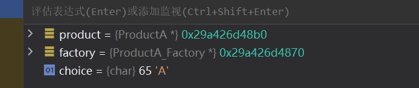

设计模式小记1 - Abstract Factory
设计模式小记
Abstract Factory 抽象工厂
工厂，顾名思义，就是产生产品的场所。在这里，他指代的是面向一系列的产品提供一个共同的抽象接口的含义，而不需要指定他们具体的类
1. 抽象工厂模式的特性
在抽象工厂模式中，客户端并不直接创建对象，而是通过调用工厂方法来创建对象。这样，客户端可以从具体产品中解耦，使得系统更具有可扩展性。
2. 抽象工厂模式的组成部分
抽象工厂模式主要包含以下四个组成部分：
- 抽象工厂（Abstract Factory）：抽象工厂定义了一个接口，声明了一组用于创建抽象产品的方法。（作为一个父类）
- 具体工厂（Concrete Factory）：具体工厂实现了抽象工厂中定义的接口，用于创建具体产品对象。（也就是实际代码里具体选择的子类工厂）
- 抽象产品（Abstract Product）：抽象产品为一类产品对象声明一个接口。
- 具体产品（Concrete Product）：具体产品实现了抽象产品声明的接口，表示特定工厂创建的产品对象。
3. 抽象工厂模式的应用场景
抽象工厂模式适用于以下场景：
- 一个系统需要独立于其产品的创建、组合和表示时。
- 一个系统要由多个产品系列中的一个来配置时。
- 当你需要强调一系列相关产品的设计以便进行联合使用时。
- 当你需要提供一个产品类库，而只想显示它们的接口而不是实现时。
4. 抽象工厂模式的实现示例
以下是一个关于按钮和复选框的抽象工厂模式示例：
Java实例
// 抽象产品：按钮
interface Button {
void render();
}
// 具体产品：Windows按钮
class WindowsButton implements Button {
@Override
public void render() {
System.out.println("渲染Windows按钮");
}
}
// 具体产品：Mac按钮
class MacButton implements Button {
@Override
public void render() {
System.out.println("渲染Mac按钮");
}
}
// 抽象产品：复选框
interface Checkbox {
void render();
}
// 具体产品：Windows复选框
class WindowsCheckbox implements Checkbox {
@Override
public void render() {
System.out.println("渲染Windows复选框");
}
}
// 具体产品：Mac复选框
class MacCheckbox implements Checkbox {
@Override
public void render() {
System.out.println("渲染Mac复选框");
}
}
// 抽象工厂
interface GUIFactory {
Button createButton();
Checkbox createCheckbox();
}
// 具体工厂：Windows工厂
class WindowsFactory implements GUIFactory {
@Override
public Button createButton() {
return new WindowsButton();
}
@Override
public Checkbox createCheckbox() {
return new WindowsCheckbox();
}
}
// 具体工厂：Mac工厂
class MacFactory implements GUIFactory {
@Override
public Button createButton() {
return new MacButton();
}
@Override
public Checkbox createCheckbox() {
return new MacCheckbox();
}
}
// 客户端代码
public class Client {
private Button button;
private Checkbox checkbox;
publicClient(GUIFactory factory) {
button = factory.createButton();
checkbox = factory.createCheckbox();
}
public void renderUI() {
button.render();
checkbox.render();
}
public static void main(String[] args) {
GUIFactory factory;
String osName = System.getProperty("os.name").toLowerCase();
if (osName.contains("windows")) {
factory = new WindowsFactory();
} else {
factory = new MacFactory();
}
Client client = new Client(factory);
client.renderUI();
}
} 在上面的示例中，我们定义了两个抽象产品（Button 和 Checkbox），以及它们的具体实现（WindowsButton、MacButton、WindowsCheckbox 和 MacCheckbox）。然后，我们创建了一个抽象工厂（GUIFactory）以及两个具体工厂（WindowsFactory 和 MacFactory），用于根据操作系统类型创建对应的按钮和复选框。最后，在客户端代码中，我们使用工厂创建了按钮和复选框，并调用它们的 render 方法来渲染它们。
C++ 实例
我们下面开始按照步骤实践一下抽象工厂的使用步骤
第一步，定义抽象工厂父类：
class AbstractProduct;
class AbstractFactory
{
public:
virtual AbstractProduct* createProduct() = 0;
}; 现在，我们的工厂的共同点就是：它一定会创建一个产品。我们之后所有的工厂模型一定会去调用抽象函数：
AbstractProduct* createProduct(); 这个接口来完成所以的附属抽象产品的创建。
第二步，定义抽象产品类
class AbstractProduct
{
public:
virtual void displayProduct() = 0;
virtual void processProduct() = 0;
}; 毫无疑问，我们的抽象产品必须凝聚所有的目标产品的共同点。比如说，我们需要告诉它自己是啥：
void displayProduct() 需要给外界提供作用方法：
void processProduct(); 我们之所以让函数成为纯虚函数，是为了强制客户程序员在后续的开发中必须重构这两个函数。来表征自己产品的特殊。
（我自己的看法：其实，根据因果，我私下认为先制定出抽象产品的定义后才考虑抽象工厂。方便我们得知如何更好的提供抽象接口。
第三步，提供具象的产品
当然，这里就不算特别属于抽象工厂的范畴了，至于是提供产品蔟还是产品，看需求的复杂程度完成指定。
class ProductA : public AbstractProduct{
public:
void displayProduct() override{
MSG("This is product A");
}
void processProduct() override{
MSG("Is dealing with Product A");
}
};
class ProductB : public AbstractProduct
{
public:
void displayProduct() override{
MSG("This is product B");
}
void processProduct() override{
MSG("Is dealing with Product B");
}
};
// ... more第四步：依照产品提供对应的具象Factory
class ProductA_Factory : public AbstractFactory
{
public:
ProductA* createProduct() override{
MSG("A is creating");
return new ProductA;
};
};
class ProductB_Factory : public AbstractFactory
{
public:
ProductB* createProduct() override{
MSG("B is creating");
return new ProductB;
};
};第五步：编写客户代码即可
int main()
{
AbstractProduct* product = nullptr;
AbstractFactory* factory = nullptr;
char choice = 'A';
std::cin >> choice;
if(choice == 'A')
factory = new ProductA_Factory;
else if(choice == 'B')
factory = new ProductB_Factory;
else
return -1;
product = factory->createProduct();
product->displayProduct();
product->processProduct();
delete factory;
delete product;
} 现在，我们可以依据外界选择特定的子类进行执行了：
当我们外界输入A时，C++自动转化为对应的子类：

5. 抽象工厂模式与工厂方法模式的比较
抽象工厂模式和工厂方法模式都属于创建型设计模式，它们的主要区别在于：
- 工厂方法模式只关注单个产品等级结构，例如只关注按钮的创建。工厂方法模式为每个产品提供一个工厂，客户端通过调用工厂方法来创建产品。工厂方法模式可以轻松地扩展为创建新产品，只需要添加一个新的具体产品类和对应的具体工厂类即可。
- 抽象工厂模式关注多个产品等级结构，例如同时关注按钮和复选框的创建。抽象工厂模式为一组相关产品提供一个统一的工厂接口，客户端通过调用工厂方法来创建一组相关产品。抽象工厂模式可以轻松地扩展为创建新的产品系列，只需要添加一个新的具体工厂类即可。
抽象工厂模式与工厂方法模式一样，都是创建型设计模式，它们之间的不同是：
- 工厂方法模式注重于产品等级结构上的扩展，而抽象工厂模式注重于产品族的扩展。
- 工厂方法模式只有一个抽象产品类，而抽象工厂模式有多个抽象产品类。
- 工厂方法模式一个具体工厂只能实现一个产品类，而抽象工厂模式有一个具体工厂可以实现多个产品类。
6. 优缺点
优点：
- 抽象工厂模式可以确保系统中所有产品的一致性，因为每个工厂都生产同样类型的产品。
- 抽象工厂模式使得易于交换产品系列，因为整个产品系列都被一个工厂所生产，只需要更换工厂即可更换整个产品系列。
- 抽象工厂模式使得易于交换产品家族，因为每个工厂生产的产品和其它工厂无关，只需要更换工厂即可更换整个产品家族。
- 抽象工厂模式可以减少客户端与不同对象之间的耦合度，因为客户端只需要知道它使用的是哪个工厂即可。
缺点：
- 抽象工厂模式增加了代码的复杂度，增加了程序的理解难度。
- 抽象工厂模式对于新的产品类型的支持并不太好，因为修改产品族需要修改抽象工厂接口，这就需要修改所有的实现工厂类。
- 抽象工厂模式可以使得产品族扩展变得困难，因为每次扩展新的产品都需要新增一整个工厂类以及其它相关类。，也就是说，我们要求此类设计模式应用在那些需求较为稳定的场景